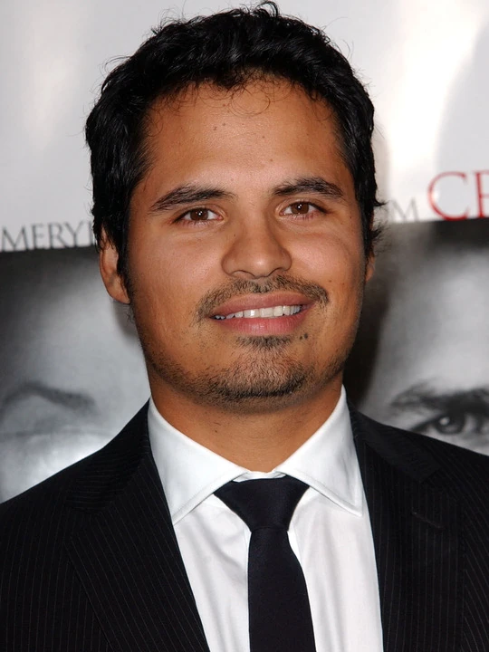

Voltar
Voltar

Bob Lee Swagger (Mark Wahlberg) é um ex-atirador de elite dos Marines, que se afastou do trabalho após uma traição. Isolado em um refúgio remoto nas montanhas, Bob é encontrado pelo coronel aposentado Isaac Johnson (Danny Glover). Johnson lhe diz que o país precisa de sua ajuda, já que a vida do presidente está em risco e apenas suas habilidades em tiro de longa distância podem impedir que esta ameaça se concretize. Inicialmente relutante, Bob aceita o trabalho. Porém logo ele descobre que tudo é na verdade uma armação patrocinada por Johnson.
Não Recomendado Para menores De 16 Anos.
